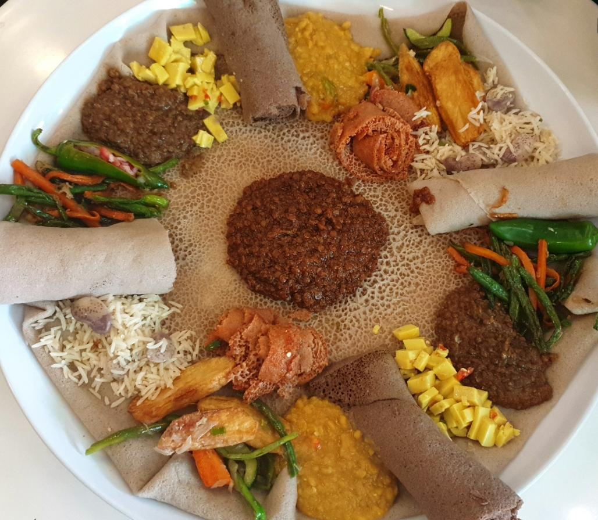

The Ethiopian injera bread, a delicious healthy alternative to white bread
Injera is a popular Ethiopian flatbread that’s a key component of Ethiopian and Eritrean cuisine. Made with a fermented batter of teff flour, water, and yeast,
it’s known for its unique texture and slightly sour taste. Injera serves as the foundation for many Ethiopian dishes and is often used as a utensil to scoop up stews and vegetables.
As a staple food and an essential part of Ethiopian culture and cuisine, injera is a must-try for foodies and fans of international cuisine alike.
INGREDIENTS:
- 7 cup (188g) Maskal Teff Flour
- 2 cups (473g) starter
- 8 cups (1.89kg) lukewarm water
- 2 cups (473g) water
- Prepared injera batter
- 4 cups of warm water
- Non-GMO Project Verified
STEPS:
Mix 1 cup (188g) Maskal Teff flour with 2 cups of warm water in container, let it ferment for 3 daysmix the fermented mixture with 6 cups of Teff flour and 4 cups of water
until you get a nice soft dough, store in a dry place at room temperature for 1-3 days based on desired sourness (one day being less sour and three days being very acidic).After 1-3 days
the dough will be ready to get cooked